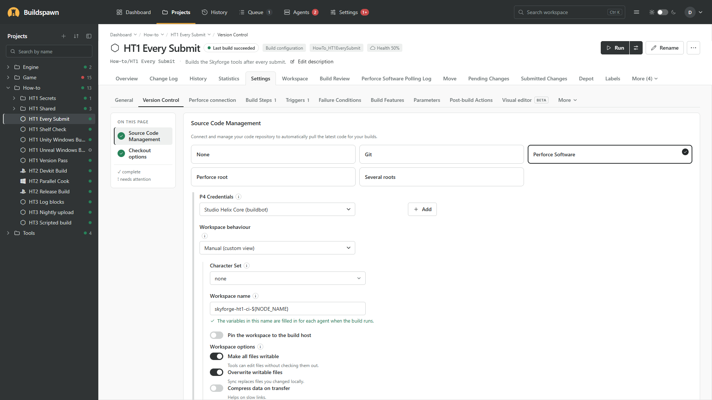
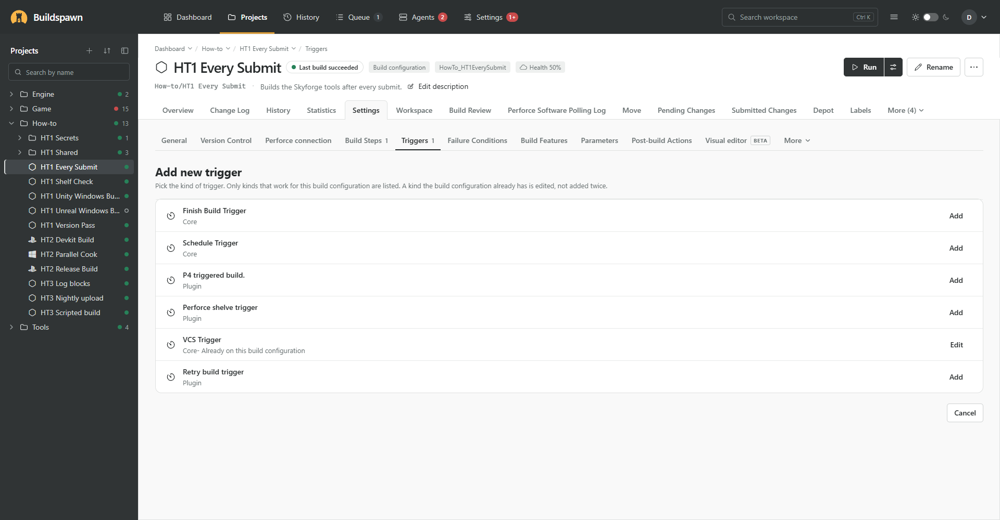
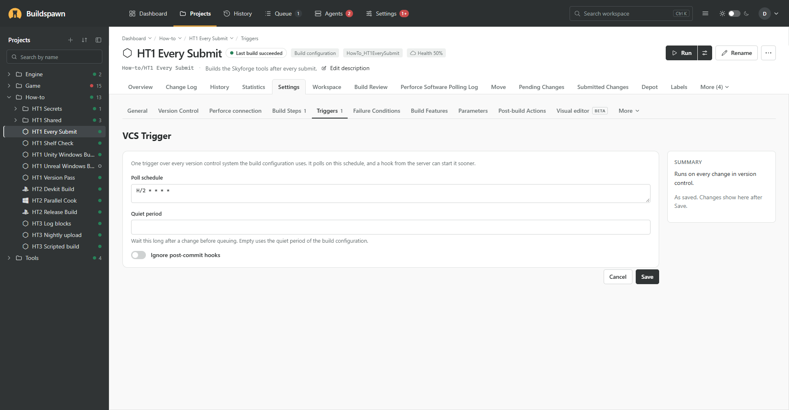
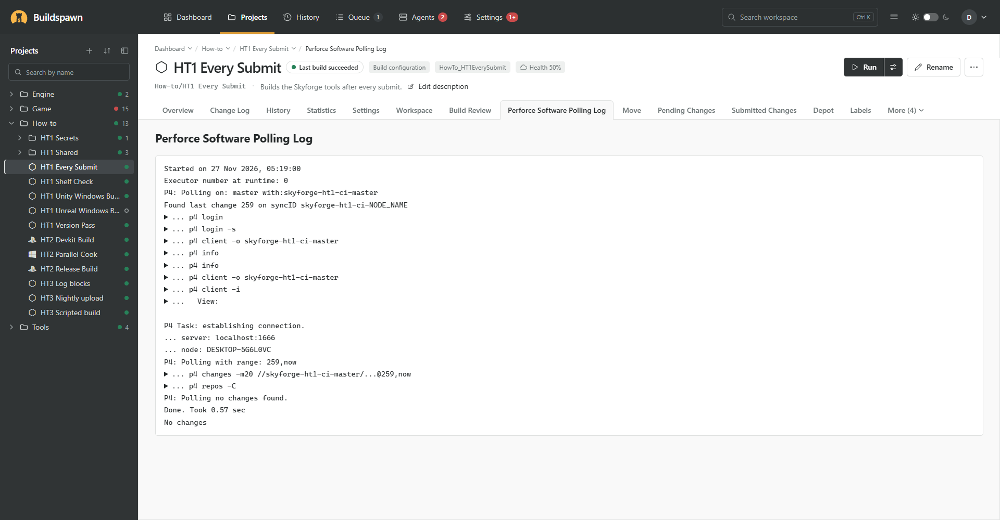

Build every Perforce submit
Start a build on its own each time someone submits a change to your Perforce depot.
Before you start
- A build configuration with at least one build step. See Create a build configuration.
- A Perforce connection (a P4 credential) with the server address and a build user, for example Studio Helix Core (buildbot). You can also add one while you follow the steps.
- The Configure permission on the build configuration.
- At least one online agent that can run the build and reach the Perforce server.
In this guide the build configuration is HT1 Every Submit in the How-to project. It syncs //depot/skyforge/....
Steps
Connect the build configuration to Perforce
- Open the build configuration and click Settings, then Version Control.
- Choose Perforce Software. (If several build configurations share one Perforce connection, choose Perforce root and pick the shared root instead. Several roots lets one build configuration use more than one.)
- Under P4 Credentials, pick your connection, for example Studio Helix Core (buildbot). If there is none yet, click Add and type the server, the user and the password or ticket.
- Set Workspace behaviour to Manual (custom view).
- In Workspace name, type a name for your studio with the agent's name at the end, for example
skyforge-ci-${NODE_NAME}. Each agent then gets its own workspace. - In View Mappings, add a row for each line of the view. The view is a table: each row has a mode (Include, Exclude or Overlay), a depot path and a workspace path. Type the depot path
//depot/skyforge/.... The workspace path fills in from the workspace name, so it should read:
You can also switch to the text view and paste the lines. The table and the text always stay in step. A preview shows what each line maps.//depot/skyforge/... //skyforge-ci-${NODE_NAME}/... - Under Populate options, keep Auto cleanup and sync. It syncs the new files and removes files that should not be there.
- Click Save.

Add the trigger
- Still in Settings, open Triggers.
- Click Add new trigger. A list of trigger kinds opens.
- Click Add on the VCS Trigger row.

Pick VCS Trigger. Here it is already on the build configuration, so the row says Edit. - In Poll schedule, type how often Buildspawn asks Perforce for new changes.
H/2 * * * *checks about every 2 minutes. - Leave Quiet period empty, or type a number of seconds, such as
60. Buildspawn then waits that long after a submit, so several submits close together go into one build. - Click Save.

The VCS Trigger checks every Perforce and Git root of the build configuration. - Click Run once. The first build tells Buildspawn which change it has already built. From then on, each new submit starts a build.
Polling is the simplest way and needs nothing on the Perforce server. If your Perforce administrator can add a server trigger that calls Buildspawn after each submit, add P4 triggered build as well. Builds then start at once instead of at the next poll.
Check it worked
- Open the Perforce Software Polling Log tab of the build configuration. It shows the last check: the change it found and whether it is new. Polling no changes found means the latest change is already built.
- Submit a change to a file inside the view. Within the poll time (plus the quiet period) a new build appears in History.
- Open the build and click Changes. It lists the changelist you submitted.

Troubleshooting
| Problem | What to do |
|---|---|
| A submit did not start a build. | Open the Perforce Software Polling Log. Check that the submitted files are inside your View Mappings; changes outside the view are ignored. Also check that the trigger is not disabled and that the build configuration or its project is not paused. |
| Every submit starts its own build and the queue fills up. | Set a Quiet period on the trigger, for example 120 seconds. Submits that arrive during it go into the same build. |
| Two agents fight over one workspace, or files are missing. | The workspace name must end with ${NODE_NAME} in both Workspace name and the right-hand side of the view. Two agents must never share one workspace. |
| Workspace name shows Not currently connected to a Perforce server. | This check on the settings form can show even when the connection is fine. Run a build and read its log: if the sync works, the connection works. If it fails, check the server address, user and password of the P4 credential. |